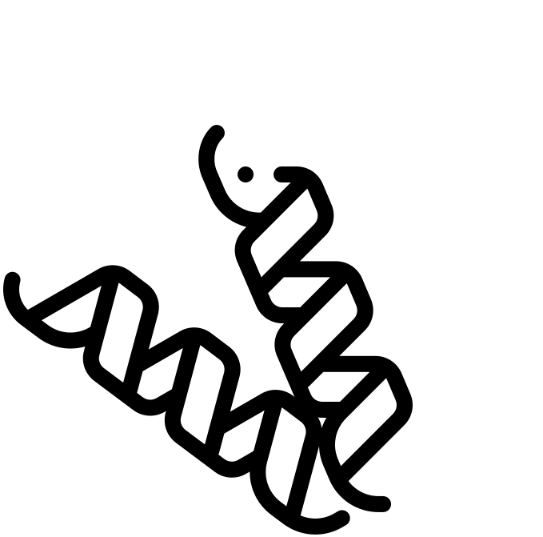

<section>
    <div>
        
        <strong>Function Prediction</strong>
        A major interest of ours is the prediction of protein function. Genomics, proteomics and various other ``-omics'' 
        inundate us with sequence and structure information, but the biological functions of those proteins in many cases still eludes us. 
        Computational prediction of protein and gene function is a rapidly growing research field in bioinformatics 
        [<a href="https://www.ncbi.nlm.nih.gov/pubmed/16772267?dopt=AbstractPlus">1</a>]. 
        Our lab co-organizes the automated computational protein function prediction meetings: <a href="http://biofunctionprediction.org/">AFP</a>. 
        The AFP meetings bring together researchers to discuss various methods for protein function prediction. We also co-organize the Critical Assessment         of Function Annotation, or CAFA. CAFA is an experiment designed to provide a large-scale assessment of computational methods dedicated to          predicting protein function. Different algorithms are evaluated by their ability to predict the Gene Ontology (GO) terms in the categories of Molecular Function, Biological Process, and Cellular Component. 
           
      </p>    
     
    
    
</section>

<section >
          
    

    <div>
                       
        <strong>Bacterial Genome Evolution</strong> <br>Gene blocks are a common occurrence in bacteria: these are genes which lie close together on the   chromosome, and may participate in a common cellular or biochemical function. Operons are gene blocks whose member genes are co-transcribed. We have developed a new method to describe the evolution of operons and gene blocks in bacteria. We describe a small set of evolutionary events that can take place in gene block evolution, and count these events to create a new type of molecular clock that tells us <a href="https://academic.oup.com/bioinformatics/article/31/13/2075/196486">how fast or how slow certain gene blocks may have evolved</a>. We hope to learn how new funcitons are acquired by ensembles of genes such as these.</p>
    </div>
              
</section>

<section>
    
     <div>
      <strong>Metagenomics</strong> is the study of genomic material 
      extracted directly from the environment. New sequencing technologies have enabled the study of whole populations of 
       genomes taken from microbial communities in the field, as opposed to single species clonal cultures in the lab. 
       Metagenomics offers a way to study how genomes evolve to cope with the microbial biotic and abiotic environments. 
         We are also looking at horizontal gene transfer as a driver of evolution in bacteria, especially for antimicrobial resistance.
     </div>
     
</section>


<!--
<div class="posts">
  {% for post in site.posts %}
    <article class="post">

      <h1><a href="{{ site.baseurl }}{{ post.url }}">{{ post.title }}</a></h1>

      <div class="entry">
        {{ post.excerpt }}
      </div>

      <a href="{{ site.baseurl }}{{ post.url }}" class="read-more">Read More</a>
    </article>
  {% endfor %}
</div>
-->

